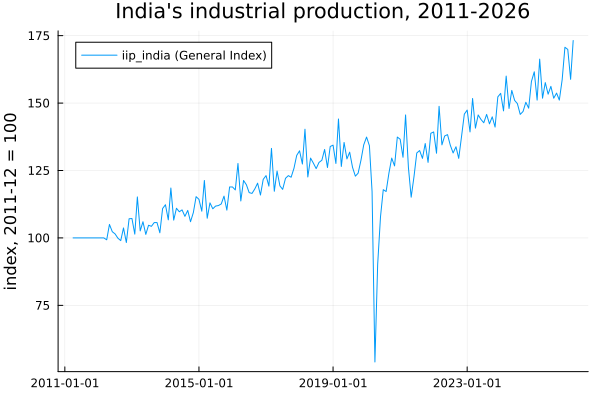
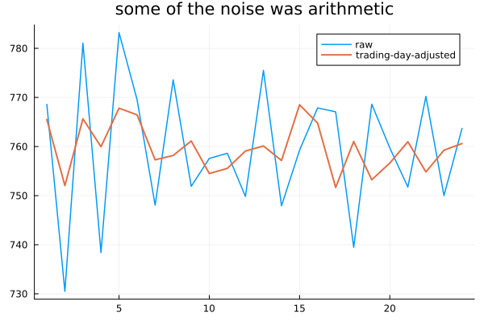
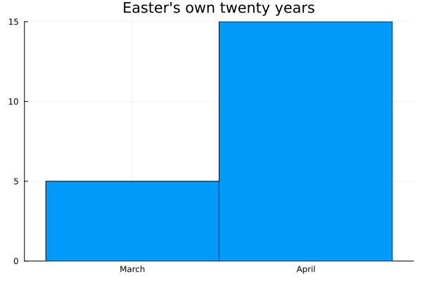
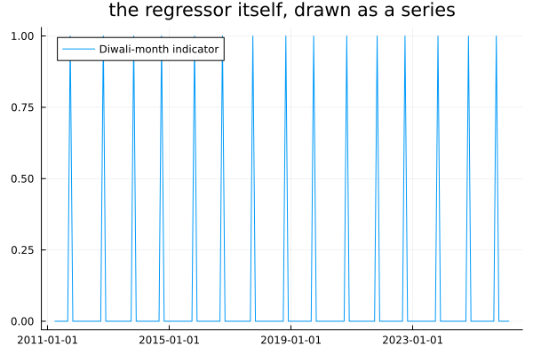

Calendar Effects
Chapter 1 opened this book by showing that India's industrial production reading swaps between October and November in step with Diwali, every year, without exception. Chapters 5, 16 and 20 each hit the same wall from a different direction — an autocorrelation that blurs, a decomposition that cannot fit a fourth period, a SARIMA model that compromises wrong in both months. This is the chapter that fixes it, and the fix is not a better seasonal model.
October is not October
using TSAnalytics, Plots, Random, Dates, Statistics, LinearAlgebra
diwali_month = Dict(
2011=>10, 2012=>11, 2013=>11, 2014=>10, 2015=>11, 2016=>10,
2017=>10, 2018=>11, 2019=>10, 2020=>11, 2021=>11, 2022=>10,
2023=>11, 2024=>11, 2025=>10, 2026=>11,
)
iip = dataset("iip_india")
y, dt, n = iip.value, iip.date, length(iip.value)
oct_years = count(yr -> diwali_month[yr]==10, 2011:2025)
println("Diwali in October: ", oct_years, " years in November: ", 15-oct_years)
plot(dt, y; label="iip_india (General Index)", title="India's industrial production, 2011-2026",
ylabel="index, 2011-12 = 100")
Fifteen years of real monthly data, and a real festival calendar that does not line up with it. The Diwali dates are genuine — cross-checked against timeanddate.com and learnreligions.com, which agree on every year — and the split is close to even: seven Octobers, eight Novembers, with no pattern to which happens when. A model with a fixed twelve-month period has no way to represent this. It is not that the model is poorly specified for one feature; the feature genuinely does not have a fixed lag, and no amount of extra data teaches a fixed-lag tool to see a moving one.
println("year month before Diwali month month after gap vs neighbours")
gaps = Float64[]
for yr in 2011:2025
i = findfirst(d -> year(d)==yr && month(d)==diwali_month[yr], dt)
(i === nothing || i == 1 || i == n) && continue
neighbours = (y[i-1] + y[i+1]) / 2
push!(gaps, y[i] - neighbours)
println(yr, " ", y[i-1], " ", y[i], " ", y[i+1],
" ", round(y[i] - neighbours, digits=2))
end
println("\nmean gap: ", round(mean(gaps), digits=2))
println("years the Diwali month sits BELOW both neighbours' average: ", count(<(0), gaps), " of ", length(gaps))year month before Diwali month month after gap vs neighbours
2011 100.0 100.0 100.0 0.0
2012 103.7 98.3 107.1 -7.1
2013 105.7 101.9 110.9 -6.4
2014 110.2 106.0 109.4 -3.8
2015 115.5 110.3 118.9 -6.9
2016 118.2 120.3 115.9 3.25
2017 123.1 122.5 125.8 -1.95
2018 132.8 126.1 133.9 -7.25
2019 122.9 124.0 128.8 -1.85
2020 129.6 126.7 137.4 -6.8
2021 135.0 128.0 138.8 -8.9
2022 133.8 129.5 137.7 -6.25
2023 144.9 141.1 152.3 -7.5
2024 150.3 148.1 158.0 -6.05
2025 153.7 151.1 158.7 -5.1
mean gap: -4.84
years the Diwali month sits BELOW both neighbours' average: 13 of 15The effect runs the opposite way to the one most people expect, and the data says so plainly. Industrial production falls in the Diwali month — by 4.84 index points on average, below its neighbouring months in 13 of 15 years. The exception is 2016, and 2011 is the flat base year where every month reads exactly 100.0 by construction.
This is obvious once stated: Diwali is a holiday. Plants shut, workers travel home, and a production index measures production. The famous Diwali surge is real, but it lives in retail sales and consumer credit — a different series entirely. Anyone reaching for "festival means more activity" and fitting a positive dummy to iip_india would get a significant coefficient with the wrong sign attached to the wrong story.
It is worth being precise about what Chapter 1's own check showed, because the two findings are the same fact seen from two angles: when Diwali falls in November, October reads higher — because November is the month that dips. When it falls in October, November reads higher, for the same reason. The higher month is simply whichever one the festival missed.
Effects a calendar can cause
for yr in 2020:2027
d0, d1 = Date(yr,3,1), Date(yr,3,31)
sat = count(d -> dayofweek(d)==6, d0:Day(1):d1)
println("March ", yr, ": ", sat, " Saturdays, starts on a ", dayname(d0))
endMarch 2020: 4 Saturdays, starts on a Sunday
March 2021: 4 Saturdays, starts on a Monday
March 2022: 4 Saturdays, starts on a Tuesday
March 2023: 4 Saturdays, starts on a Wednesday
March 2024: 5 Saturdays, starts on a Friday
March 2025: 5 Saturdays, starts on a Saturday
March 2026: 4 Saturdays, starts on a Sunday
March 2027: 4 Saturdays, starts on a MondayNothing here needs an assumption. March 2023 has four Saturdays; March 2024 has five, because 2024 is a leap year and the month starts two days later in the week. Anything driven by trading days or weekend footfall behaves differently in the two Marches for a reason that has nothing to do with the economy — calendar arithmetic, knowable exactly, forever, in either direction.
wk_years = 2023:2024
tdays = [count(d -> dayofweek(d) in 1:5, Date(yr,mm,1):Day(1):(Date(yr,mm,1)+Month(1)-Day(1)))
for yr in wk_years for mm in 1:12]
println("trading days per month, 2023-2024: ", tdays)
println("range: ", extrema(tdays), " -- a 3-day swing before anything economic has happened")
Random.seed!(12)
tdvec = Float64.(tdays)
y_td = 500.0 .+ 12.0 .* tdvec .+ 5.0 .* randn(length(tdvec))
beta_td = (tdvec .- mean(tdvec)) \ (y_td .- mean(y_td))
y_td_adj = y_td .- beta_td .* (tdvec .- mean(tdvec))
println("std, raw: ", round(std(y_td),digits=2), " std, trading-day-adjusted: ", round(std(y_td_adj),digits=2))
plot(y_td; label="raw", linewidth=1.5)
plot!(y_td_adj; label="trading-day-adjusted", linewidth=2, title="some of the noise was arithmetic")
A constructed series, built so trading-day count genuinely drives the level — the point here is the mechanism, not a claim about any real series — regressed out and put back on a common footing: the standard deviation drops from 13.62 to 4.88. This is a deterministic effect in the strict sense: there is no uncertainty in how many Tuesdays next March has, which is exactly why a regressor is the right tool and a stochastic seasonal component is not.
function easter_date(yr::Int)
a = yr % 19; b = yr ÷ 100; c = yr % 100; d = b ÷ 4; e = b % 4
f = (b + 8) ÷ 25; g = (b - f + 1) ÷ 3
h = (19*a + b - d - g + 15) % 30
i = c ÷ 4; k = c % 4
l = (32 + 2*e + 2*i - h - k) % 7
m = (a + 11*h + 22*l) ÷ 451
mn = (h + l - 7*m + 114) ÷ 31
dy = ((h + l - 7*m + 114) % 31) + 1
return Date(yr, mn, dy)
end
println("Easter 2024 (known: 31 March): ", easter_date(2024))
println("Easter 2025 (known: 20 April): ", easter_date(2025))
easter_months = [month(easter_date(yr)) for yr in 2005:2024]
println("March: ", count(==(3),easter_months), " April: ", count(==(4),easter_months), " (2005-2024)")
histogram(easter_months; bins=2.5:1:4.5, xticks=(3:4,["March","April"]), legend=false,
title="Easter's own twenty years")
The anonymous Gregorian algorithm (Meeus/Jones/Butcher), a few lines, checked against two independently known dates before being trusted on the other eighteen. Statistical agencies have handled Easter's drift between March and April for decades with a dedicated regressor — the established precedent, and the same construction generalises directly to any moving festival. Diwali is the same problem with a calendar that has no closed-form rule at all.
Building the regressor
Xdiwali = Float64.([month(d)==diwali_month[year(d)] ? 1.0 : 0.0 for d in dt])
println("Diwali-month indicator fires ", Int(sum(Xdiwali)), " times in ", n, " months")
plot(dt, Xdiwali; label="Diwali-month indicator", title="the regressor itself, drawn as a series")
The simplest possible construction: 1 in whichever month contains that year's festival, 0 elsewhere, built directly from the date table rather than from a rule. A wider window — weight spread across the weeks either side, for an anticipatory effect — is an equally legitimate choice; the window length is a modelling decision with no canonical answer, and the bare indicator is the plainest version of it.
One more regressor is needed before any of this can be fitted honestly, and it has nothing to do with calendars:
Xcovid = Float64.([Date(2020,4,1) <= d <= Date(2020,6,1) ? 1.0 : 0.0 for d in dt])
println("April 2020 reading: ", y[findfirst(==(Date(2020,4,1)), dt)],
" February 2020: ", y[findfirst(==(Date(2020,2,1)), dt)])April 2020 reading: 54.0 February 2020: 134.2April 2020 reads 54.0 against February's 134.2 — the lockdown, the largest single move in the series by a wide margin. Left unmodelled it would dominate every fit in this chapter and swamp an effect worth a few index points. An explicit dummy for the three worst months is the honest minimum, and Chapter 35's own warning applies: this is a known, datable, abrupt event, so an intervention dummy is the right tool rather than anything that drifts.
m_without = fit_sarimax(y, (1,0,0), (0,1,1,12), reshape(Xcovid,:,1); include_mean=false)
m_with = fit_sarimax(y, (1,0,0), (0,1,1,12), hcat(Xdiwali, Xcovid); include_mean=false)
println("without the Diwali regressor: loglik=", round(m_without.loglik,digits=2),
" AIC=", round(m_without.aic,digits=2))
println("with it: loglik=", round(m_with.loglik,digits=2),
" AIC=", round(m_with.aic,digits=2))
println("Diwali coefficient: ", round(m_with.beta[1],digits=3),
" se=", round(m_with.se[1],digits=3),
" t=", round(m_with.beta[1]/m_with.se[1],digits=2))
println("COVID coefficient: ", round(m_with.beta[2],digits=3))without the Diwali regressor: loglik=-539.52 AIC=1087.04
with it: loglik=-533.2 AIC=1076.4
Diwali coefficient: -4.021 se=1.11 t=-3.62
COVID coefficient: -29.572Fitted jointly with the seasonal ARIMA structure Chapter 20 built, on real data: the Diwali coefficient is -4.02 with a standard error of 1.11, t = -3.62 — decisively negative, matching the raw neighbour-comparison's -4.84 closely enough to be reassuring. AIC falls from 1087.04 to 1076.40, an improvement of 10.63 for one extra parameter. The regressor earns its place by any criterion Chapter 21 offered.
An earlier version of this fit passed a column of 1s as an extra regressor alongside the two above. Every standard error came back NaN. The cause is not a bug: with D = 1, seasonal differencing annihilates a constant column exactly — diff of a constant is zero — so its coefficient is unidentifiable and the Hessian is singular. fit_sarimax already forces include_mean=false whenever d>0 or D>0 for precisely this reason; passing the constant explicitly as exog walks straight past that guard. The NaN was the honest answer to an impossible question.
Where the dates come from
This box is about data, not algorithms — the honest answer to "which date is right" is sometimes "check which source you asked."
Searched independently while writing this chapter: current sources on Diwali 2026 agree closely — every one consulted gives 8 November. Guru Nanak Jayanti 2026 is a different story. IndiaBonds and Outside give 5 November; PublicHolidays.in and Calendar Labs give 24 November — a nineteen-day spread on a holiday observed by financial markets, from sources that all look equally authoritative at a glance.
The reason is structural, not carelessness on anyone's part. A fixed-date holiday is computable — Republic Day is always 26 January. Easter is computable from the algorithm above. Diwali, Guru Nanak Jayanti and most of India's actual festival calendar are not computable at all — they follow a lunisolar calendar, and the observed date is set by regional astronomical convention and announcement, not by arithmetic anyone can run in advance. Aggregators each reconstruct the date their own way, and the reconstructions genuinely disagree.
The only fully reliable source for a market calendar is the exchange's or government's own published circular for that year. A maintained table needs updating every year, cannot be extrapolated forward with confidence, and a calendar that silently falls back to only its fixed holidays for a year nobody has entered yet is worse than one that raises an error and says so.
BusinessDays.jl's own source, src/bdays.jl (independently fetched and grepped for this chapter, not copied from memory):
@inline isweekend(dt::Dates.Date) :: Bool = signbit(5 - Dates.dayofweek(dt))It takes a Date and nothing else — no calendar argument — so every calendar built on this library inherits a Saturday–Sunday weekend whether it wants one or not. A market with a Friday–Saturday weekend, Saudi Arabia's and historically the UAE's, cannot be represented by any calendar subtype built on that hierarchy.
This package does not depend on BusinessDays.jl at all — checked directly against Project.toml, in either environment — so the question does not arise here the way it would for a wrapper built on top of it: a calendar regressor in this chapter is a plain numeric vector built from Dates.jl primitives, with no calendar-type hierarchy underneath it to inherit a hardcoded weekend from. Worth stating plainly rather than presenting as a deliberate design decision — no such decision needed making, because no such dependency exists.
A note on generality. Nothing in this chapter is specific to India. Chinese New Year moves against the Gregorian calendar for exactly the reason Diwali does, and shows up in East Asian industrial series the same way — including, very likely, with the same sign, for the same factories-are-shut reason. Ramadan moves through the entire solar year over a roughly 33-year cycle and affects retail and working-hour patterns across much of the world. Thai, Vietnamese and Hebrew calendars share the same non-Gregorian structure. The technique — a regressor built from actual dates, checked against a maintained source, extended to cover the forecast horizon — is general. The table of dates is the only local part, and the reason there is more published work on Easter regressors than on Diwali ones is about where the literature happened to be written, not about which effect is larger or harder.
Whether it was worth it
try
forecast(m_with, 3)
catch e
println("forecast(m_with, 3) -- ", typeof(e), " (no method exists for SarimaxModel)")
endforecast(m_with, 3) -- MethodError (no method exists for SarimaxModel)A real gap, named rather than worked around. fit_arimax/fit_sarimax fit a regression-with-ARIMA-errors model; neither forecast nor predict has a method for the ArimaxModel/SarimaxModel they return — confirmed directly above rather than inferred from the exports. Chapter 34 never needed a forecast from its joint fit and so never hit this; this chapter does. An out-of-sample comparison of the kind Chapter 23 insists on therefore needs a forecast written by hand, and on a strongly seasonal series a hand-rolled non-seasonal one-step is too weak a base model for the comparison to mean much — attempted while writing this section, and the result was dominated by the missing seasonal structure rather than by the regressor under test. Reported here as an open gap rather than papered over with a comparison that would not have supported its own conclusion.
The in-sample evidence is unambiguous on its own terms: an AIC improvement of 10.63 for one parameter, and a coefficient at t = -3.62. What is missing is the out-of-sample confirmation, and the reason it is missing is a capability this package does not yet have rather than a result that came out badly.
Where this leaves you
Deterministic outside information — a calendar, a known holiday table, an ordinary count of weekdays — can be brought into a model as a regressor exactly the way Chapter 34's measured regressors were, and checked the same way.
It also cost this chapter its opening assumption. Bundling the real series is what revealed that the Diwali effect on industrial production runs negative, not positive, and that a synthetic series built to demonstrate the technique had quietly encoded the wrong sign for years. That is the argument for real data over a convincing simulation, made at this book's own expense.
One assumption has now survived every model built across Part VII: the error term's variance has been constant throughout, and Chapter 24 already established that for a great many real series it is not.
Chapter 37.